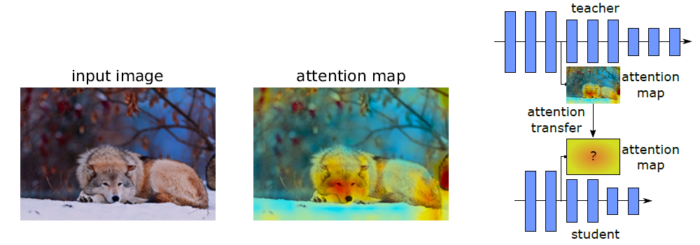
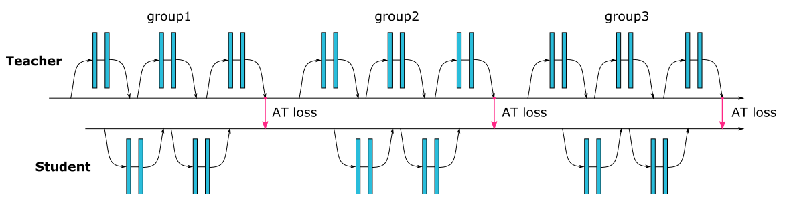
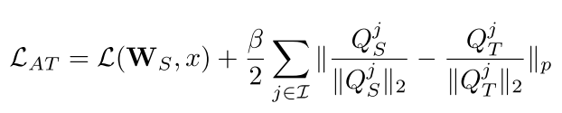
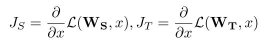
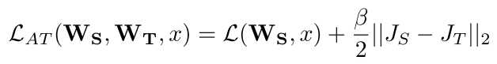
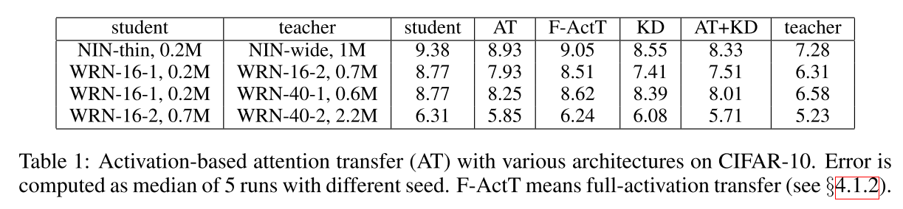
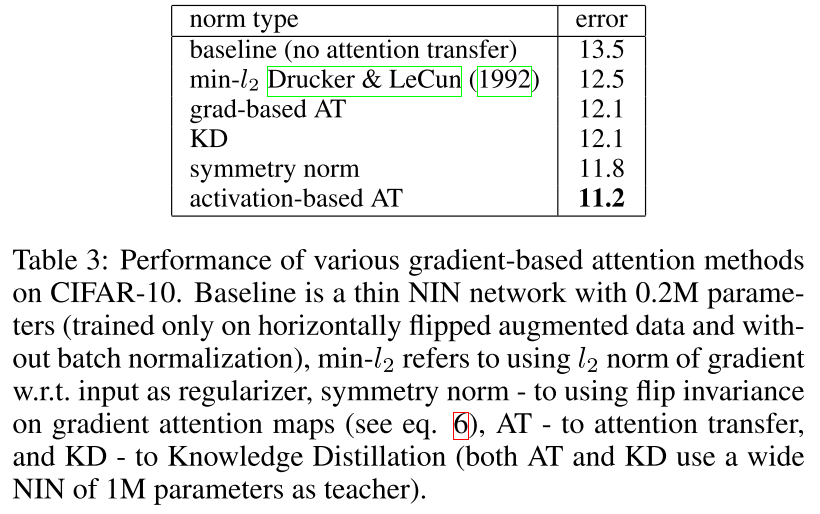
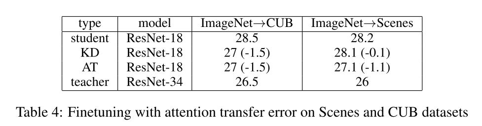
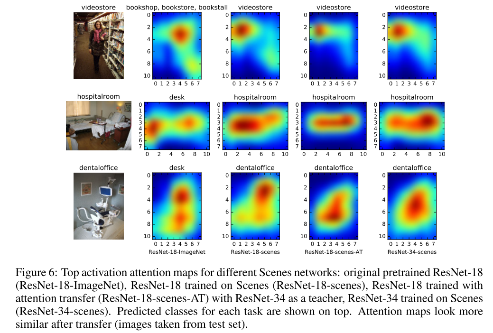
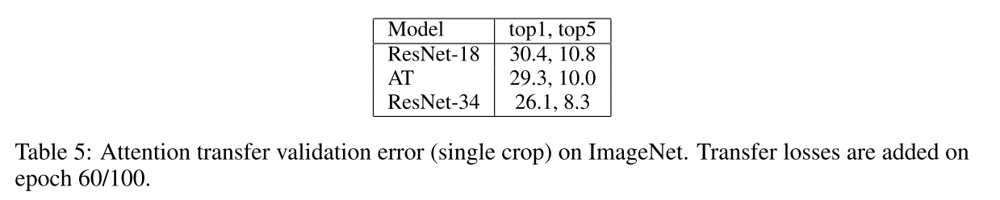

文章提出了几种注意力转移的新方法，在各种数据集以及卷积神经网络架构上效果得到一致的提升。
该发表在 2017 年 ICLR;
文章出发点
- 同一个场景，不同观察者有不同的知识储备、不同的目标以及不同的注意力机制，因此会观察到不同的东西；
- 是否可以用注意力图来连接导师网络和学生网络，并以此来提升学生网络的性能（如下图）？
- 基于已有网络，构建更浅更小的网络，并保持网络图像分析的效果。

文章创新点
- 提出基于注意力的网络间知识迁移；
- 提出基于activation-based（基于特征图）和gradient-based（基于梯度）空间注意力图
- 实验证明可行
- activation-based的注意力迁移可以比直接迁移特征图得到更好的结果，文章所提方法还可以与知识蒸馏相结合。
具体实现
activation-based的注意力图三种具体实现方式：
- 各特征图对应位置像素的绝对值和
- 各特征图对应位置像素的绝对值p次方和
- 各特征图对应位置像素的绝对值p次方最大值

学生网络训练时的损失函数为：
Gradient-based的注意力转移
- 注意力为损失函数对输入的梯度：
- 学生网络训练时的损失函数为：
实验结果
CIFAR数据集
- Activation-based注意力迁移
- 特征图平方和
- loss中注意力迁移部分的系数beta=1000/(注意力图中的像素个数 x Batch)
- 当加入KD训练时，对beta进行衰减

- Gradient-based注意力迁移

- Activation-based注意力迁移
基于注意力的ImageNet数据集到CUB和Scenes的迁移学习
- 在ResNet的最后两个模块加注意力迁移损失


- 在ResNet的最后两个模块加注意力迁移损失
ImageNet数据集
- 在ResNet的最后两个模块加注意力迁移损失

- 在ResNet的最后两个模块加注意力迁移损失
结论
- 对于分类任务，使用注意力迁移效果可以明显提升。
- 对于更加需要关注局部区域的检测和弱监督定位任务，应该也会有效（需要验证）。
- 对于分割，是否有效？